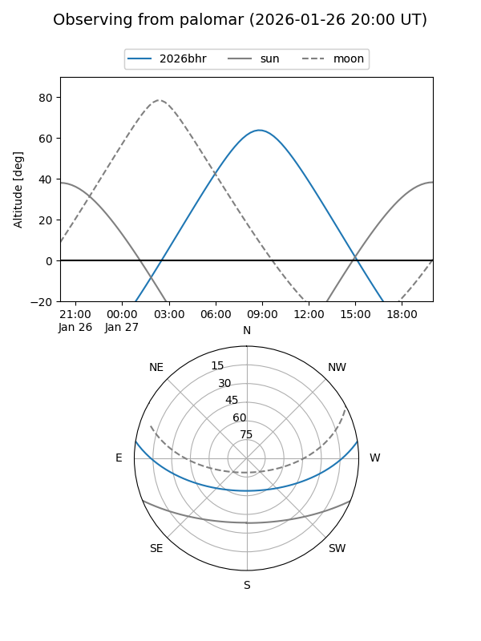
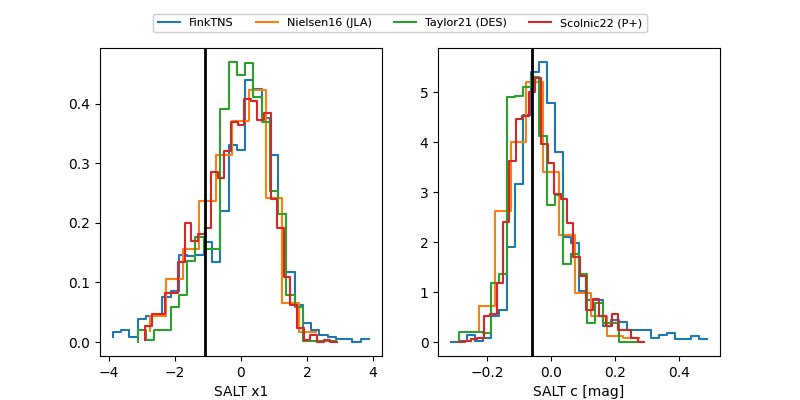

2026bhr
Target 2026bhr at 2026-01-25 09:16
Aliases and brokers:
FINK: link
Lasair: link
ALeRCE: link
TNS: link
YSE: link
alt names
ZTF26aadqmuk (ztf,fink_ztf)
2026bhr (tns,yse)
Coordinates:
equatorial (ra, dec) = 141.9455,+7.36213
equatorial (HMS+DMS) = 09:27:46.93,+07:21:43.68
galactic (l, b) = (225.4616,+37.94682)
Flags:
Photometry:
last ztfr=18.90
1 ztfr detections
Lightcurve

Visibility


Additional plots
